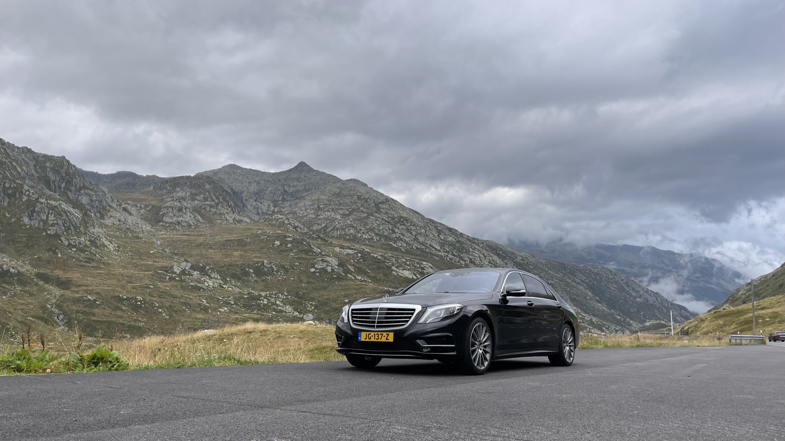
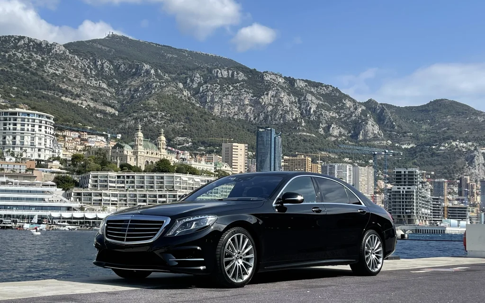
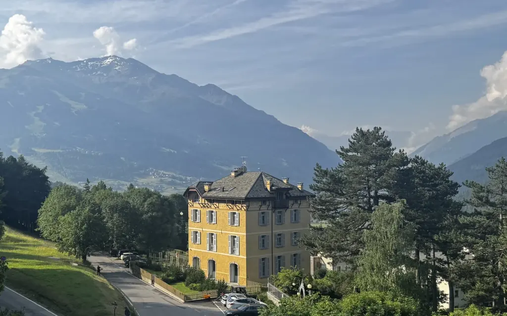
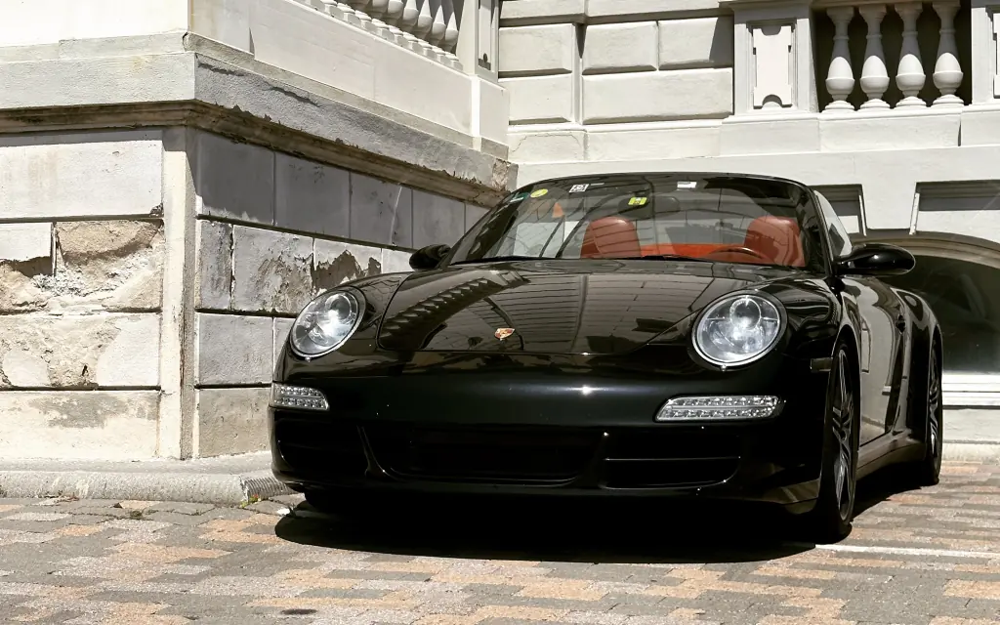
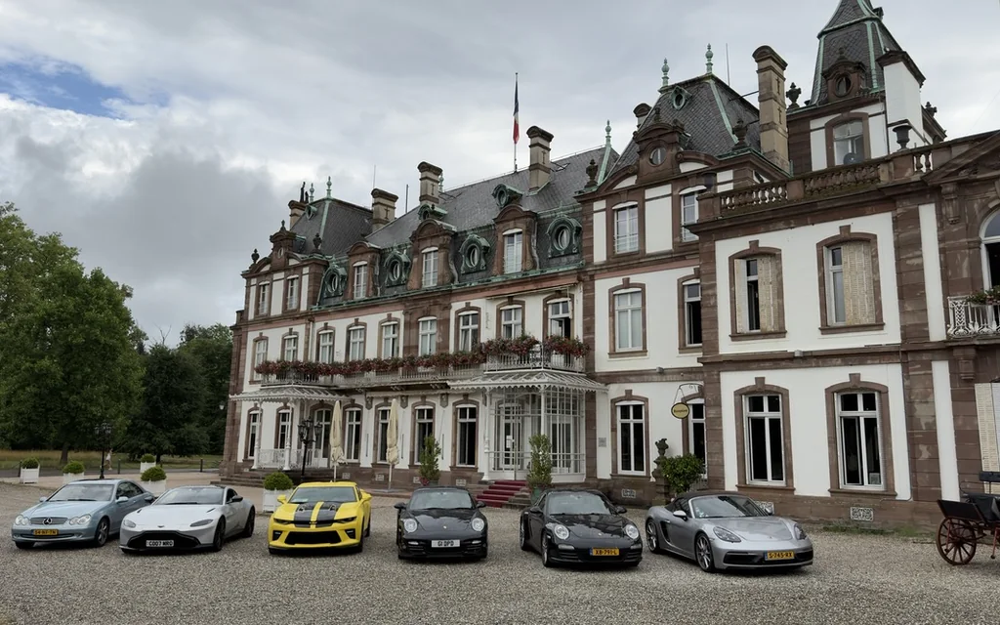

De Reis
Besloten autoreizen door Europa, voor één gezelschap tegelijk — drie dagen of drie weken, gereden voordat ze worden aangeboden.
Geen tour. Een route geschreven voor één gezelschap, en niemand anders erbij.
Wij rijden de wegen zelf, slapen in de huizen en eten waar wij u heen willen sturen. Wat dat niet doorstaat, wordt niet voorgesteld. U reist in uw eigen auto of in een van de onze — met een chauffeur gedurende de hele reis, of, als de auto van u is, om beurten zelf achter het stuur.
Ons zusterhuis, Signature Drivers Club, brengt zijn kring van rijders samen op gezamenlijke reizen door Europa. Bij Lohuis Signature blijft elke missie besloten.
Vier routes
Elke route is eenmaal gereden door ons eigen team, of door een groep mensen die elk hun eigen deel ervan kennen. Daarna opnieuw gereden door lokale kenners in de dagen voor uw vertrek, want een weg in mei is niet dezelfde weg in september.
Een reis wordt geschreven voor één auto of voor meerdere. De grootste die wij buiten de Signature Drivers Club hebben gereden telde er acht.
De meeste reizen duren een of twee weken. De alpenroutes zijn seizoensgebonden en worden alleen gereden zolang de passen open zijn; op elke route worden het weer en de weg vóór vertrek gecontroleerd, en onderweg opnieuw.

St. Moritz naar Monaco
Vanuit het Engadin, over de passen, en omlaag naar de kust via het Comomeer.

Stuttgart naar Modena
Bormio en Milaan op weg naar de Motor Valley.

Luxemburg naar Livorno
Luzern, dan het Meer van Lugano, dan omlaag naar de Tyrreense kust.

Amsterdam naar Rome
De lange. Straatsburg, dan Como, dan zuidwaarts tot het Rome is.
Wat bij elke reis hoort.
De route
Dag voor dag geschreven, met alternatieven die al gereden zijn voor weer, afsluitingen en stemming.
Huizen en tafels
Vooraf vastgehouden en gekozen op bezoek in plaats van op beoordeling.
Chauffeur en ondersteuning
Een volgauto rijdt mee wanneer daarom gevraagd wordt: een bergingsauto, een tweede luxeauto met een reservechauffeur, of een stationwagen, SUV of V-Klasse die de bagage rechtstreeks van het ene huis naar het volgende brengt.
Eén aanspreekpunt
Van het eerste gesprek tot de laatste kilometer naar huis.
Als er iets misgaat
Berging en een vervangende auto worden hoe dan ook geregeld. Meestal loopt dat via uw eigen verzekeraar of het netwerk van het merk; waar dat niet zo is, hebben wij door heel Europa mensen die het doen.
Uw eigen auto, of de onze
Uw eigen auto, of een uit het wagenpark. Een auto van ons wordt van de eerste tot de laatste kilometer door onze chauffeur gereden. Is de auto van u, dan kunnen de dagen worden verdeeld — gereden over de snelwegkilometers en door de steden, zelf achter het stuur waar de weg het waard is — en hij wordt teruggebracht zoals hij vertrok.